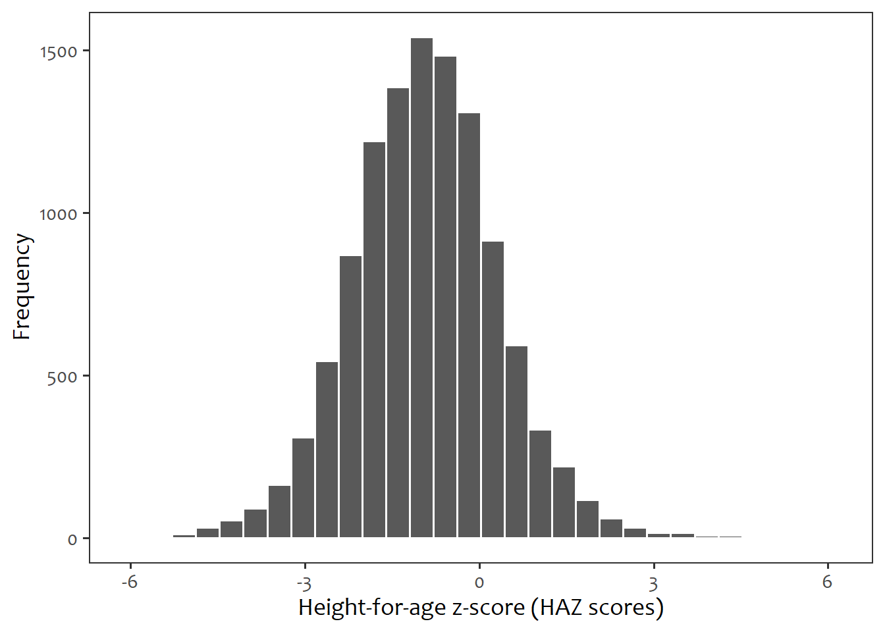

rm(list = ls())
pacman::p_load(
tidyverse, haven, labelled, epiDisplay, survey,
gtsummary, extrafont, flextable)
df <- read_dta("../Mini project/Data/KEKR8BDT/KEKR8BFL.DTA")Task 2: How Kenyan maternal/child indicators (stunting, skilled birth attendance, immunisation) vary by region and wealth quintile.
Loading the KDHS Data 2022 (KR Record)
Data preparation
## Restrict the analysis to the youngest alive child, living with the responded
df <- df |>
mutate(
age_months = v008 - b3) |>
filter(
b5 == 1, # child is alive
b9 == 0, # child lives with the respondent
!is.na(v003) # mother's line number must be available
) |>
group_by(
v001,
v002,
v003 # grouping by cluster, household, and mothers line number
) |>
mutate(
bidxr =
rank(bidx, ties.method = "first")) |>
filter(
bidxr == 1 # Keeping the youngest child
) |>
ungroup()The datasets includes a total of 13528 children from 1689 clusters across Kenya.
The ouctomes of interest
1. Stunting
df_stunting <- df |>
filter(
age_months > 5 & age_months < 60) |>
mutate(
hw70 = ifelse( #hw70 is the height-for-age zscore and should be divided by 100
hw70 >
1000, NA, hw70),
haz = hw70/100,
stunted = ifelse(haz < -2, "Stunted", "Not stunted"))
df_stunting |>
ggplot(
aes(x = haz)) +
geom_histogram(color = "white") +
labs(
x = "Height-for-age z-score (HAZ scores)",
y = "Frequency") +
theme_bw(base_family = "Candara", base_size = 14) +
theme(panel.grid = element_blank())
Stunting was defined as height-for-age z-score (HAZ) < -2 based on the WHO 2006 growth reference standards. The analysis included a total of 11715. According to the WHO guidelines, HAZ scores range from -6 to 6 and this was ascertained for the data as shown in Figure 1.
Immunisation, restricted to children 12-23 months
Immunisation analysis was restricted to only 12-23 months. Full vaccination was defined as having taken BCG, HepB (birth dose), 3 doses of DPT-HepB-Hib, 3 [4] doses of OPV, 1 dose of IPV, 3 [2] doses of pneumococcal vaccine, 3 [2] doses of rotavirus vaccine, and 1 dose of MCV, according to the national vaccination schedule.